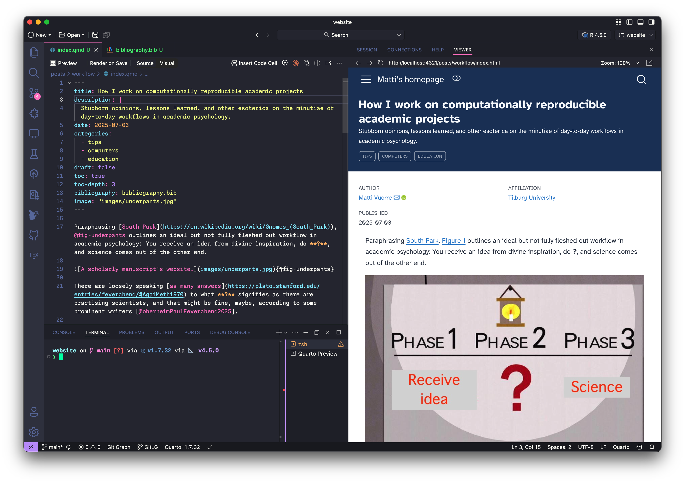

![]()
%%{init: {
'theme': 'base',
'themeVariables': {
'primaryBorderColor': '#666',
'commitLabelFontSize': '12px',
'commitLabelBackground': '#ffffff',
'git0': '#4a90e2',
'git1': '#7b68ee'
}
}}%%
gitGraph
commit id: "Initial project"
commit id: "Add data collection script"
commit id: "Add statistical analysis"
commit id: "First draft complete" tag: "v0.1.0"
branch modeling
checkout modeling
commit id: "Try alternative model"
commit id: "Add sensitivity analysis"
commit id: "Robustness checks"
checkout main
commit id: "Update documentation"
commit id: "Fix data processing"
merge modeling
commit id: "Finalize results"
commit id: "Analysis complete" tag: "v0.2.0"
commit id: "Add publication plots"
commit id: "Ready for submission" tag: "v1.0.0"
Figure 1 outlines an ideal but not fully fleshed out workflow in academic psychology: You receive an idea from divine inspiration, do ?, and science comes out the other end.
There are loosely speaking as many answers to what ? signifies as there are practising scientists, and that might be fine, maybe, according to some prominent writers (Oberheim and Preston 2025).
But instead of philosophizing, here I talk about the day-to-day activities that fill the space between receiving an idea and science: What do I do after receiving an idea? How do I read and write scholarly works? How do I organize my materials and collaborate with others? How do I make my computations and manuscripts reproducible? Where do I put my materials such that they don’t just tick an “open data” checkbox but are actually findable and useable by others? What kinds of tools fill my workshop and what programs do I run on my computers? And how do I (want to) publish the resulting write-ups?
This post is about providing my current answers to these kinds of questions. It is not really about teaching the tools (here’s some links), platforms, and methods I use. Instead, I outline the things I have to deal with, and how I bring them together to a workflow where tools (mostly) get out of my way to let work happen. The guiding principle here is to accept that a lot of science these days can be considered “amateur software development” (Figure 2). So while some of this will be technical, ignoring the technical aspects of scientific work is counterproductive. Instead we might as well learn the tools of the trade.
1 Curating a library
First, my idea is probably related to something that someone else has already written about. I collect those writings in my Zotero library. There are alternatives to Zotero but many of them, like Endnote, suck. Zotero is free, open source (extensible), and works well. What I do is I collect all the works I know about the topic into a Zotero collection (or group library). I then use online search engines to find more works. Most search engines suck, but Google Scholar sucks the least. When I’m on a website that has some relevant writing (books, articles), I click the little Zotero button in Firefox (requires the Zotero Connector add-on) and the piece is saved to my Zotero library.
If I intend to write a document, I have a related Zotero collection with probably around a hundred works, but this varies a lot depending on how much I know about the topic already. Since all the previous works were wrong, when I read and re-read them my aim is to figure out exactly how they were wrong and why, so I can be a little less wrong this time around: I will also be wrong but hopefully in a useful and transparent way (Scheel 2022).
2 Reading
I then semirandomly find time—on trains, buses, and aeroplanes—to read and understand what others have thought and done about the topic. It’s important to keep in mind that they are all wrong—that’s the point of research; nobody knows what they’re doing—but you still need to know what others have done in order to stand on their shoulders: What are some common methods and ideas, how have people approached this idea in the past?
If you ask people whether they know how to read, most will answer “yes”. Most of them are wrong. Developing the mental models and methods required for efficiently going through scholarly writings takes time and effort. Fortunately, guides exist (Savage 2024; Carey, Steiner, and Petri 2020) and I’d recommend looking into those.
2.1 Peer review
Reviewing others’ work is a common purpose for reading and a key part of the scientific workflow. I think most people aren’t trained in this at all, and based on a casual memory search of the reviews I’ve received, it really shows. I try to follow advice put forth in Davis et al. (2018), Roediger (2007), and Lindsay, Giner-Sorolla, and Sun (2017):
“Remember the Golden Rule. Treat authors the way you’d want to be treated. Be respectful and remember that you can easily demoralize authors, especially students and young scholars. Keep insults and snide comments to yourself. Don’t hide behind a veil of anonymity to lob mean-spirited critiques that you wouldn’t share with the authors face to face.”
–Scott Lilienfeld in Lindsay, Giner-Sorolla, and Sun (2017)
I also try not to review works that aren’t openly available online. It’s probably a good idea to openly license your reviews, so the publication industry can’t steal and subsequently hide/suppress your words, and make them available online so all can learn from them.
3 Writing
After developing a sufficient understanding of what I’m doing and what others have thought about the topic, I start writing some words into a plain text (Healy 2019) file. This file may or may not build toward an early version of a manuscript.
My buddy Niklas once told me to write more like we speak and not in jargon-filled academese. I try to follow this advice as best as I can, but have a fondness for sentences that flow long like the Amazon river—through forests, mountainous valleys, flatlands, and human settlements—and thus become incomprehensible to readers who long ago have forgotten the point once they reach the sentence’s final punctuation mark. I guess we now have LLMs to help us write, but these words are mine, and I take pleasure in crafting them and the process of discovery through writing.
“Using ChatGPT to complete assignments is like bringing a forklift into the weight room; you will never improve your cognitive fitness that way.”
If you need some examples to improve your writing, go read some Ed Yong.
One way in which I make writing more enjoyable for myself is to use the right tool. For me this tool is an integrated development environment (IDE), which is a fancy text editor that allows me to write documents that weave together human and computer words. I currently use Positron, because I like it and it allows writing human words (“prose”, sometimes I don’t know what those words mean so I use onelook.com) and computer words (“code”, sometimes I have no idea what I’m doing so I read the documentation) together into computationally reproducible documents (more on this in Section 4).
Many people use Microsoft Word and that’s fine too, but one should not be surprised that there are alternatives. And if you use Word, do yourself a favor and use the Styles panel.
3.1 Positron (or RStudio, VS Code, or any IDE)
Figure 3 shows what Positron looks like as I am writing this document. It’s confusing but you get used to it. On the left, I have a source file open called index.qmd (I’ll talk more about this below in Section 4). Below it, there’s a terminal into which I can write commands that do things on my computer. On the left is a preview of what the rendered document will look like, which updates every time I save the source document.

4 Computationally reproducible documents
Computationally reproducible documents are plain text (Healy 2019) files into which I write prose, such as this, and code, such as the colored text in Figure 3. (You can see the plain text source file of this very document here). This source file is then “rendered” into a typeset document using a computer program. The code languages in that figure are YAML at the top, which I use to specify metadata (the document’s title, for example) and markdown, which I use to format text (**bold** source turns into bold output).
Other languages I commonly use in these documents are R, which is a statistics language (`{r} sqrt(2)` in source turns into 1.4142136 in the output), and LaTeX, used to typeset maths from $y = \alpha + \beta x$ in the source file to \(y = \alpha + \beta x\) in the output document.
4.1 Quarto
To combine prose with all these languages and their outputs, a computer program is needed. I use Quarto. The source document “index.qmd” in Figure 3 is a Quarto document, and this is how I write all of my computationally reproducible documents. What this means is that I might write a file like this, run a command (quarto render index.qmd) in the terminal, and get this.
Many choose to write in MS Word (or LaTeX) instead, which is fine, but you cannot create reproducible documents with Word. With Word I need to copy-paste my computational results to the Word file. When they or data supporting them change, I must copy-paste again. Mistakes happen!
Reproducible documents typically require a project with many files: data, bibliographies, supplementary code, and so on. Here is the basic file structure common to many of my projects:
❯ eza --tree my-project --level 2
my-project
├── _quarto.yml
├── bibliography.bib
├── data-raw
│ └── data.csv
├── index.qmd
└── README.mdThe most important file there is “README.md”, which must describe what the project is, who is involved, and how to reproduce all the computations and the manuscript itself. The computations and manuscript content are all in “index.qmd”. Here are two example manuscripts’ Quarto source files: Estimating Signal Detection Models with regression using the brms R package & Communicating causal effect heterogeneity. Here are what they look like when “rendered” with Quarto: https://osf.io/preprints/psyarxiv/vtfc3_v1 & https://osf.io/preprints/psyarxiv/mwg4f_v1.
“_quarto.yml” contains Quarto metadata, such as what the output should look like. “bibliography.bib” is a bibliography file that contains all the references and their information used in the document.
4.2 Bibliography management
Since I use Zotero to manage my library and Positron to write my Quarto documents, I use this extension to easily insert references in the document. In Positron, I call “Zotero Citation Picker”, find a reference, hit return which inserts something like [@healyPlainPersonsGuide2019] into the text and the associated entry in the bibliography file. When the document is rendered, the citation is automatically formatted as an in-text reference and in the bibliography section.
5 Version control
While tools like MS Word’s “track changes” can be nice when you’re writing prose, they don’t work with computationally reproducible documents. So we end up with version control systems, such as Git.
5.1 Git
So what is Git, and version control systems more generally? This is a whole thing that you should learn about on Software Carpentry’s or Atlassian’s websites. It is mainly used by programmers, but as Richard McElreath puts in Science as Amateur Software Development today’s research involves a lot of programming, and we ignore that fact at our peril.
After I’ve established what idea I’m working on and how, I’m going to start tracking the state of the project with Git (Vuorre and Curley 2018). I create a local Git repo, and link it to a remote GitHub repository (more on that in Section 6.1). I commit my changes whenever it makes sense but am not religious about it: Version control is a tool to get stuff done, not the stuff itself. Figure 4 shows how an example project might unfold over time.
If I’m working alone on a project, I often don’t bother with branches. If I’m working with others, I’m more careful and try to keep the main branch clean and working, so it is easier for others to maintain a working version without my possibly temporary and breaking changes. In Figure 4 I switched to a “modeling” branch to work on a large feature, and didn’t want to put incomplete work into the ‘main’ branch, but still keep track of checkpoints on that work using commits. This probably makes no sense, but should after you’ve read Software Carpentry’s tutorial on Git.
6 Collaboration
Version control systems are mistakenly interpreted, as I suggest above, to be about version control. They do that too, but their main benefits become apparent when collaborating. Just like the “track changes” feature in MS Word, they allow you to see what’s changed in your document(s) and review & undo edits, but more importantly they help others with that. It doesn’t matter if that “other” is another person or the selfsame you later in time.

If I’m just writing prose, I’ll probably collaborate on a Google Docs or MS Word (on OneDrive or some similar abomination), because these cloud platforms minimize friction in getting changes from person A to person B. As soon as we’re working together on a computationally reproducible projet, I encourage people to collaborate on the Git repo whose remote is on GitHub. Figure 5 (source) shows a schematic of a collaborative workflow.
6.1 GitHub
GitHub is a Git repository hosting and collaboration platform. It is a for-profit enterprise owned by Microsoft, and while I use it I’m prepared to abandon ship as soon as enshittification begins. Right now it is the best tool for collaborating on Git repositories, but others exist.
After I’ve connected my local Git repo to a GitHub remote, I’ll send a link to my collaborators so they can clone their local version, work on it, commit, push, and send pull requests for me to review. There’s a lot of weird words there but they’re quick to learn (from here or here, for example).
6.2 Fallback options
So it is clearly unrealistic to demand that all collaborators are on board with this workflow. That’s fine. For me it is important to manage a single source of truth—the reproducible Quarto plain text file that includes all the computations. But many others prefer Word or Google Docs. In those cases I read others’ revisions / comments / suggestions in the Word document, and based on my judgment edit the source Quarto document. I then render it into Word along with PDF (which will be the version I’ll submit). Going between Word and Positron is not optimal, but the goal is to go from “Receive idea” to “Science” (Figure 1) with the least friction. I’ve found it is not that painful—with Word track changes someone still needs to evaluate revisions and modify accordingly. Here there’s just the extra step of doing that in a separate file.
If I’m not the lead author but maybe just working on the analyses or Results section, I write a Quarto file for just the Results section. That usually works okay as well.
7 Depositing materials
Many folks in my field drag and drop their files from their local filesystem to the Open Science Framework. I prefer a simpler (to me) workflow, where GitHub releases are automatically archived (with citation metadata, a DOI, etc) to Zenodo. Here is a Zenodo archive of this GitHub repository that contains a computationally reproducible manuscript project for this manuscript.
8 Showing my work to others
In academia, we typically call the process of showing our work to others “publishing”. Although the goal is pretty clear—make publicly funded common goods, or science, freely available for anyone to read—publishing is a byzantine process (Figure 6).
I am increasingly against how the current “publishing” system works, and for me a near-final milestone for an academic document is the PDF file I post to PsyArXiv Preprints, a popular document-sharing platform for the psychological sciences. Optimally I would receive peer feedback on those documents to incorporate into the write-up, but sadly this is not how things work yet. So we go through some of the worst web portals known to humanity to “submit”, “revise and resubmit”, and “publish” the words and pictures in other kinds of websites called “journals”. It’s all a bit silly.
Surprisingly, my thoughts on this topic are not universally shared. For some context, take a look here and here (Harnad 1990, 2001).
9 Overview of tools
| Tool/Platform | Purpose |
|---|---|
| Zotero | Library and reference manager. (See also Better BibTeX.) |
| Positron | Integrated Development Enviroment for writing reproducible computational documents. (See also Zotero citation picker, & Air formatter.) |
| Quarto | A program for writing reproducible documents with multiple output formats. |
| Git | Version control system: Tracks the history of a folder on your computer. |
| GitHub | Collaboration platform for projects tracked with Git. |
| Zenodo | An open-source, CERN-backed archiving and sharing platform. Automatically archives my projects’ GitHub releases and assigns each a citeable DOI. |
| PsyArXiv | Document sharing platform for the psychological sciences. |
| PREreview | Peer-review platform. |
10 End
The central ideas in the ongoing can be boiled down to this:
- Decide and define early on what you’re doing / the anticipated “product”. Usually this is a scholarly manuscript available for others to read and criticize.
- Put all the things related to that thing into as few places as possible. Then track that with Git, and collaborate on GitHub.
- Ensure that anyone can get the source of the project, click a button, and create the manuscript you share on PsyArXiv.
Maybe that goes between collecting the underpants and profit?
References
Carey, Maureen A., Kevin L. Steiner, and William A. Jr Petri. 2020. “Ten Simple Rules for Reading a Scientific Paper.” PLOS Computational Biology 16 (7): e1008032. https://doi.org/10.1371/journal.pcbi.1008032.
Davis, William E., Roger Giner-Sorolla, D. Stephen Lindsay, Jessica P. Lougheed, Matthew C. Makel, Matt E. Meier, Jessie Sun, Leigh Ann Vaughn, and John M. Zelenski. 2018. “Peer-Review Guidelines Promoting Replicability and Transparency in Psychological Science.” Advances in Methods and Practices in Psychological Science 1 (4): 556–73. https://doi.org/10.1177/2515245918806489.
Harnad, Stevan. 1990. “Scholarly Skywriting and the Prepublication Continuum of Scientific Inquiry.” Psychological Science 1 (6): 342–44. https://doi.org/10.1111/j.1467-9280.1990.tb00234.x.
———. 2001. “The Self-Archiving Initiative.” Nature 410 (April): 1024. https://doi.org/10.1038/35074210.
Lindsay, D., Roger Giner-Sorolla, and Jessie Sun. 2017. “Digest of Tips for Reviewers.pdf,” July. https://osf.io/https://osf.io/hbyu2.
Oberheim, Eric, and John Preston. 2025. “Paul Feyerabend.” In The Stanford Encyclopedia of Philosophy, edited by Edward N. Zalta and Uri Nodelman, Spring 2025. Metaphysics Research Lab, Stanford University. https://plato.stanford.edu/archives/spr2025/entries/feyerabend/.
Roediger, Henry L. 2007. “Twelve Tips for Reviewers.” APS Observer 20 (April). https://www.psychologicalscience.org/observer/twelve-tips-for-reviewers.
Savage, Patrick E. 2024. “How and Why to Read (and Write and Publish) Academic Research.” OSF. https://doi.org/10.31234/osf.io/p37zj.
Scheel, Anne M. 2022. “Why Most Psychological Research Findings Are Not Even Wrong.” Infant and Child Development 31 (1): e2295. https://doi.org/10.1002/icd.2295.
Vuorre, Matti, and James P. Curley. 2018. “Curating Research Assets: A Tutorial on the Git Version Control System.” Advances in Methods and Practices in Psychological Science 1 (2): 219–36. https://doi.org/10.1177/2515245918754826.
Reuse
Citation
BibTeX citation:
@online{vuorre2025,
author = {Vuorre, Matti},
title = {How {I} Work on Computationally Reproducible Academic
Projects},
date = {2025-08-22},
url = {https://vuorre.com/posts/workflow/},
langid = {en}
}
For attribution, please cite this work as:
Vuorre, Matti. 2025. “How I Work on Computationally Reproducible
Academic Projects.” August 22, 2025. https://vuorre.com/posts/workflow/.